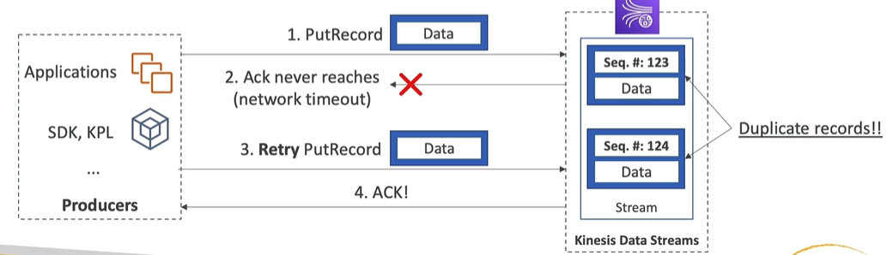

Kinesis Data Streams
Contents
Kinesis Data Streams#
required for processing stream data
able to scale horizontally by specifying number of stream shards
when creating data stream, number of shards is declared by creator
by the number of shard you define consumption rate and ability to ingestion of big data (shards are used to split incoming data and create parallel processing)
Kinesis Data Streams is a proprietary product developed by AWS and is not based on open-source Apache Kafka
Kinesis Data Streams synchronously replicates data across three Availability Zones, providing high availability and data durability
https://aws.amazon.com/kinesis/data-streams/faqs/
Producers#
Used for getting data into AWS Kinesis stream
data are created by producers
producer can be an application, other client, AWS SDK command or Kinesis Agent
producer sends record to Kinesis Stream
record contains Partition Key and Data Blob (up to 1MB, limit which can’t be changed)
partition key defines which shard record will be sent to (so this is the first step when you can do a hot partition when you choose partition key in which most records are one value)
one shard can ingest 1MB of data per second or 1000 messages per second (AWS limit, see more https://docs.aws.amazon.com/streams/latest/dev/service-sizes-and-limits.html)
Producer types#
AWS SDK#
you can use AWS CLI to send records to Kinesis Stream
you can send record to stream using
put-record(one record) orput-records(many records) cli command (see examples below)PutRecords increase throughput - it generates less HTTP requests
can be used on mobile app (Ios, android)
USE CASE: low throughput, synchronous, higher latency accepted, simple API, Lambda
raises ProvisionedThroughputExceeded exemption when go over the limits
kinesis rejects records exceeding limits, it does not repeat the put operation
can be solved by exponential backoff retry (i.e. after 2,4,8,16 seconds) or by increasing number of shards
make sure you don’t have hot shard (shard for which the most record partition keys are send)
AWS KPL#
Kinesis Producer Library, have more option than SDK and are able to solve advanced issues
easy to implement C++/Java library (the most often Java is used)
USE CASE: high throughput, low latency, asynchronous, long-running producers, but not in cases when you are focused on very low latency (due to default mini-batch functionality)
includes automated retry mechanism
both synchronous and asynchronous API are available - in opposition to AWS SDK when only synchronous is possible
by default, also submit metrics to cloudwatch, so you can monitor kinesis data stream
supports mini-batching, enabled by default, used to improve throughput and decrease costs
collects records and sends to Kinesis Stream in one record (executing on one PutRecords API call)
aggregate records to fill 1MB/sec limit, and then send them using one PutRecords API call
uses RecordMaxBufferedTime option, default 100ms, which states how long Kinesis has to wait to implement batching on produced records
by batching, latency is increased but throughput increases (so if you want to decrease latency, lower RecordMaxBufferedTime)
compression has to be implemented by user manually - decompression has to be implemented in consumer solution
records handled by KPL can be consumed only by KCL (Kinesis Consumer Library) or special helper library
Kinesis Agent#
Linux tool which can be used on external linux server and i.e. send logs from this server automatically
Java based agent, built on top of KPL. Monitors server logs and send new records to Kinesis Stream
available only for linux servers
configured by config file with parameters (simple unix text file)
features:
can write from multiple locations to multiple Kinesis Streams or Firehoses
can route based on directory/log file
can preprocess data before sending to streams (simple format change, csv to json, json to csv, log to json for common log formats etc, custom field names, apply delimiter when csv is target etc)
handles file rotation, retry upon failures…
can store own metrics in cloudwatch
3rd party applications (Spark, Flume, Kafka Connect, NiFi)#
Handling duplicates on producer side#
duplicates can occur due to network timeouts of producer
producer tries to put record
kinesis saves records in shard, but response to the producer is not received by producer
producer can’t be sure record is saved, so retries put record
kinesis saves record in shard and confirm to the producer, response is received by producer
producer think record is saved once, in reality record is stored in shard twice
what’s more, both records contains equal data, but are stored as a separate record with other sequential number

To fix it:
include unique record id on producer side to be able to deduplicate it on consumer side
doesn’t mean record won’t be stored twice in stream - it will be stored twice but can be deduplicated using this unique record id (can be even uuid generated on producer side)
Consumers#
Used for getting data from stream to clients/apps
data ingested by shards of Kinesis Stream can be retrieved by other application - called Consumer
consumer can be an application, AWS Lambda (by event), Kinesis Data Firehose or Kinesis Data Analytics
additionally to record created by producer, consumer see sequence number field which describe the position of record within shard
there are two types of limits for consumers
2MB/sec per shard for all consumers in total (legacy, standard)
2MB/sec per shard per consumer - if you enable enhanced consumer mode
Consumer types#
SDK - you can use AWS CLI to read records from Kinesis Stream
KCL - Kinesis Consumer Library, have more option than SDK and are able to solve advanced issues
Kinesis Collector Library
AWS Lambda
3rd party applications (Spark - even directly, Kafka, NiFi)
Kinesis Firehose
Values of kinesis streams records data are base64 encoded - therefore consumers has to encode them to see proper values.
AWS SDK#
Classic/Standard#
you can read/poll record from stream using
get-records(many records) CLI commandGetRecords polls records from Kinesis Stream with limits for one poll:
up to 2MB/sec for each shard (checked each 5 seconds - see below)
up to 10MB of data (then throttle for 5 seconds)
up to 10.000 records (then throttle for 5 seconds)
up to 5 executions/second for GetRecords - means you have minimum 200ms latency of data
limits are shared by all consumers - means if you have i.e. 10 consumers consuming from the same shard, they have shared limit of 2MB/sec
above limits are shared by all consumers for shard - meaning if you have more consumers which polls data from one shard, their latency will be higher because they will share one 10MB/5sec limit and 5 executions/second
Fan-out enhanced (fan out)#
implemented in August 2018
works with KCL 2.0 and AWS Lambda
in opposition to classic, each consumer gets own limit of data transfered - 2MB per shard
in opposition to classic, consumer not polling data, but subscribe to shard. After subscription, Kinesis pushes data to consumer over HTTP/2.
easier scaling out - you can add more consumers which transforms data from kinesis stream (still there is a limit for producing data - 1MB/s, but can be helpful when consumer stopped work and after recover needs to eat the lag and transform records send to kinesis when consumer didn’t work)
has additional costs, but throughput is increased and latency is decreased to ~70ms
USE-CASE:
standard:
you can tolerate ~200ms latency
low number of consuming application
minimize costs
fan out consumers:
low latency required (~70ms)
multiple consumers for the same stream
can accept higher costs
AWS KCL#
KCL = Kinesis Client Library
java-first library, but created also for other languages (python - https://github.com/awslabs/amazon-kinesis-client-python, go, ruby, node)
can read records from Kinesis Stream produced with KPL (can de-aggregate records created by KPL)
share multiple shards with multiple consumers (and aggregates their limits)
able to checkpointing to resume progress in case of application downtime
uses DynamoDB below for coordination and checkpointing (one row per shard)
in case of ExpiredIteratorException raised, you need to increase WCU (write capacity units) in your dynamo table setup
AWS Kinesis Connector Library#
older java library
reads data from Kinesis Stream and send them to other services like S3, DynamoDB, Redshift or Elasticsearch Service
in most areas replaced by Kinesis Firehose or AWS Lambda
must be running on EC2 instance
AWS Lambda#
can read records from Kinesis Stream
can de-aggregate records created by KPL (by usage of additional small library)
can be used to lightweight ETL and saves data to:
S3
DynamoDB
Redshift
ElasticSearch
other, almost not limited as long as implemented in programming language used in Lambda function
can be used to trigger notification (SNS)
has a configurable batch size (you can declare how many records has to be waited to execute Lambda function and increase throughput)
Handling duplicates on consumer side#
duplicates can occur due to:
worker (part of consumer KCL application) terminates unexpectedly
worker instances are added or removed
shards are merged or split
the application is deployed
To fix it (quite difficult):
make your consumer application idempotent
handle duplicates in your final destination (so in other words be prepared for duplicates, i.e. if data are stored finally in database, use UPSERT instead of INSERT)
Properties/characteristics#
stream has retention defined by stream creator - can be from 1 to 365 days
ability to reprocess data (based on retention mentioned in line above)
data in stream are immutable (cannot be changed)
records with the same partition key goes to the same shard
Capacity modes#
provisioned mode (older)#
you need to manually declare number of shards for created Kinesis Stream
each shard is limited by AWS limits (shard producer 1MB/sec or 1000 messages/sec, shard consumer 2MB/sec when enhanced fan out is disabled)
costs are calculated by number of shards provisioned by hour
on-demand mode (newer)#
capacity is declared automatically
default capacity = 4MB/s or 4000 records per second per shard
maximum capacity = 200MB/s and 200000 records per second
scales automatically based on throughput peak during the last 30 days
costs are calculated based on number of streams and data transferred in and out of the stream
best solution if you don’t know size of events
Scaling#
Add Shard#
also called “shard splitting”
Use to:
increase stream capacity (throughput)
divide a hot shard
old shard is closed and deleted once the data is expired
in practice, below steps happened when adding shard
completely new shards are created
new data are being saved to created shards, old one doesn’t receive any data from producers (old shard is closed)
there is a move process which moves data from old shard to newly created one
old shard will disappear when move process is done
Remove Shard#
also called “shard merging”
Use to:
save costs (fewer shards = less money paid, while costs are mostly calculated on shards number)
decrease the stream capacity
when two low traffic shards can be merged into new one - that way we reduce costs because we pay for number of shards in stream
in practice, it works similar to shard splitting - new shard is created, old ones are locked for receiving new records, old records are moved to new shard and after move is done, old shards disappear.
Out-of-order records after resharding#
When splitting shards it can be a situation when consumer starts reading from new shards without finishing reading data from historical shard.
Solution for dealing with this is to read entirely from the parent until you don’t have new records after resharding.
KCL has built-in this logic, even after resharding operations
Autoscaling#
there is no native autoscaling functionality - there is an API endpoint UpdateShardCount and can be used in custom Lambda, but still lambda has to be developed manually
Scaling Limitations#
resharding operations can’t be done in parallel - so only one split or merge operations can be done at a time (meaning one shard split to two or two partitions merged to one)
one resharding (split or merge) partitions at a time - i.e. if you have 10 partitions and want to increase this number to 20, 10 operations is needed
each resharding operation takes a few seconds, depends on size of changed shard
Security#
Kinesis Shards are created within your account and region
Control access to stream using IAM policies
shards can be connected from private subnet using VPC endpoint
shards can be connected from public subnet using the internet
transfer of data is encrypted using HTTPS
data are encrypted at rest using KMS
if you want to implement encryption on client side, you have to implement manually
you can do private networking using VPC Endpoints
Hands-on#
AWS SDK (CLI)#
Stream Management#
aws kinesis create-stream --stream-name test_mg --shard-count 1 --profile michal --region eu-west-1
aws kinesis list-streams --profile michal --region eu-west-1
aws kinesis describe-stream --stream-name test_mg --region eu-west-1 --profile michal
aws kinesis update-shard-count --stream-name test_mg --target-shard-count 2 --scaling_type UNIFORM_SCALING
aws kinesis delete-stream --stream-name test_mg --profile michal --region eu-west-1
Produce records#
aws kinesis put-record --stream-name test_mg --region eu-west-1 --profile michal --partition-key user1 --data '{"action": "user signup"}' --cli-binary-format raw-in-base64-out
aws kinesis put-record --stream-name test_mg --region eu-west-1 --profile michal --partition-key user1 --data '{"action": "user login"}' --cli-binary-format raw-in-base64-out
aws kinesis put-records --stream-name test_mg --region eu-west-1 --profile michal --records file://records.json
where records.json has below structure:
[
{
"PartitionKey": "user1",
"Data": {
"action": "user signup"
}
},
{
"PartitionKey": "user1",
"Data": {
"action": "user login"
}
},
{
"PartitionKey": "user2",
"Data": {
"action": "user signup"
}
}
]
aws kinesis put-record --stream-name test_mg --region eu-west-1 --profile michal --partition-key user1 --data-binary fileb://binary-data.bin
Consume records#
get-shard-iterator is used to get current position of shard, option TRIM_HORIZON used here is to specify that shard data should be returned from the oldest data in the shard.
Other types are:
LATEST - points to the newest data, allows to read only new data added after shard iterator is obtained
AT_TIMESTAMP - points to data at specific time
AFTER_SEQUENCE_NUMBER - points to data after specific sequence number
Function get-records in response returns NextShardIterator next to data - so you can use it in consuming next records from stream
aws kinesis get-shard-iterator --stream-name test_mg --shard-id shardId-000000000000 --shard-iterator-type TRIM_HORIZON --profile michal --region eu-west-1
aws kinesis get-records --shard-iterator "AAAAAAAAAAGqN+Z5rHgWgExCnlJa0txKc/95odt/jhTh6GtAwBS32R6QazWe8BMCBfcF7u3Q7wax+7y3avWcYLpw10lt+jDrJitVnmnQwcL3mTf9QATnv/hsFFUOb9uELHADYNsLM2Ee1X1mpkVEKewrUlswpEu3gBqbadqlZ9i+Vu44Ygyuf0SRhmvMDk9THfq9QgthynomGlumQmR6nmEjQCJPfzPbDg4O4hRbL2GkSK2n2wrjGA==" --profile michal --region eu-west-1
when using SDK, you have to manually put shard id in command, in opposition to KCL when this option is managed automatically